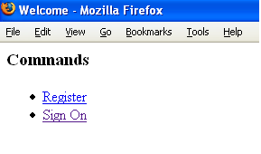
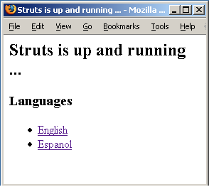
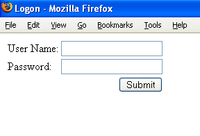

In the Hello World lesson, we presented a page with a simple Welcome message. In the Using Tags lesson, we create a Welcome page with links to other actions in the application.
Web applications differ from conventional websites in that web applications can create a dynamic response. To make it easier to reference dynamic data from a page, the framework offers a set of tags. Some of the tags mimic standard HTML tag while providing added value. Other tags create non-standard, but useful controls.
One use of the Struts Tags is to create links to other web resources, especially to other resources in the local application.
| While HTML provides a simple a tag for creating hyperlinks, the HTML tag often requires us to include redundant information. Also the HTML tag cannot easily access dynamic data provided by the framework. |
Linking
A very common use case in web applications is linking to other pages. Now that we know Struts is up and running, let's add a Welcome page with links to other actions.

The Code
<%@ taglib prefix="s" uri="/struts-tags" %> <html> <head> <title>Welcome</title> <link href="<s:url value="/css/tutorial.css"/>" rel="stylesheet" type="text/css"/> </head> <body> <h3>Commands</h3> <ul> <li><a href="<s:url action="Register"/>">Register</a></li> <li><a href="<s:url action="Logon"/>">Sign On</a></li> </ul> </body> </html>
Another common use case is using a link to change locales. On the HelloWorld page, let's add links to change the user's locale and to display a message from the application resources.

<body> <h2><s:property value="message"/></h2> <h3>Languages</h3> <ul> <li> <s:url var="url" action="Welcome"> <s:param name="request_locale">en</s:param> </s:url> <s:a href="%{url}">English</s:a> </li> <li> <s:url var="url" action="Welcome"> <s:param name="request_locale">es</s:param> </s:url> <s:a href="%{url}">Espanol</s:a> </li> </ul> </body>
| The var attribute (used in the <s:url...> tags) was introduced in Struts 2.1; use the id attribute in its place with Struts 2.0. |
How the Code Works
"%{url}" will be evaluated to the url defined with the s:url tag. On the Welcome and HelloWorld pages, we use two different Struts tags to create links. We create
- Resource links
- Direct links, and
- Links with parameters.
Let's look at each in turn.
Resource links
First, in the head element, we use the url tag to inject a page reference into the HTML link tag.
<link href="<s:url value="/css/tutorial.css"/>" rel="stylesheet" type="text/css"/>
Note that the reference is absolute. We can move the page containing the link around without worrying about resolving relative references.
The url tag will also inject the web application context name.
Direct links
In the "Commands" section, we use the url tag again, to link to a Struts 2 Action.
<li><a href="<s:url action="Register"/>">Register</a></li>
When the link is rendered, the tag will automatically append the appropriate extension, so that we do not need to embed that information across the application.
The tag will also URL-encode the link with the Java session ID, if needed, so that the Java session can be retained across requests.
Links with parameters
Finally, in the Languages section on the HelloWorld page, we use the url tag along with the param and a tags to create a link with request parameters.
<s:url var="url" action="Welcome"> <s:param name="request_locale">en</s:param> </s:url> <s:a href="%{url}">English</s:a>
This param tag will add the parameter "?request_locale=en" to the Welcome Action URL, and store it under the name "url". The a tag then injects the "url" reference into the hyperlink. This request_locale parameter will be picked up by the I18n Interceptor, and change your Locale accordingly.
 Any number of parameters can be added to the URI by adding more param tags.
Any number of parameters can be added to the URI by adding more param tags.
Wildcard Mappings
Since the Welcome page is nothing but links, we don't need an Action class. We'll still use a mapping, however, so we can use an action URI. If we link only to actions, and never to pages, then it's easy to add an Action class later.
<action name="Welcome" >
<result>/Welcome.jsp</result>
</action>
As we create the application, we will often want to go directly to a page. To make prototyping easy, we can change the Welcome entry to a wilcard mapping.
The Code
<action name="*" > <result>/{1}.jsp</result> </action>
How the Code Works
If no other mapping matches, the framework will
- match "Welcome" to the asterisk, and
- substitute "Welcome" for any "{1}" tokens in the mapping.
Likewise, if there is a link to a "Login" action, and nothing else matches, then the "/Login.jsp" page is returned instead.
 Wildcard mappings let you create your own conventions, so that you can avoid redundant configuration. The first mapping that matches a request wins. (So put a mapping like <action name="*" > last!)
Wildcard mappings let you create your own conventions, so that you can avoid redundant configuration. The first mapping that matches a request wins. (So put a mapping like <action name="*" > last!)
If you are coding along, you can replace the Welcome action in your struts.xml with the Wildcard version.
Data Entry Forms
Most applications will use several data entry forms. The Struts Tags make creating input forms easy.

The Code
<%@ taglib prefix="s" uri="/struts-tags" %> <html> <head> <title>Login</title> </head> <body> <s:form action="Logon"> <s:textfield label="User Name" name="username"/> <s:password label="Password" name="password" /> <s:submit/> </s:form> </body> </html>
How The Code Works
- The JSP engine reads the taglib reference at the top of the page and loads the Struts Tags for use with this page under the prefix "s".
- The Struts Tags – textfield, password, and submit – each emit the appropriate label and control type.
What to Remember
The hardest part of writing a web application can be coding the pages. The framework makes coding pages easier by providing a set of custom tags. The Struts Tags can access dynamic data provided by the framework. Tags reduce the amount of markup needed to create a page.
 For more about Struts Tags, see the Tag Developers Guide.
For more about Struts Tags, see the Tag Developers Guide.
 For more on how to access action members, request attributes and others from pages, see OGNL.
For more on how to access action members, request attributes and others from pages, see OGNL.
| Next | Onward to Coding Actions |
|---|---|
| Prev | Return to Hello World |